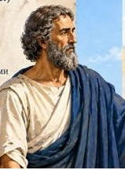
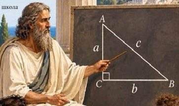
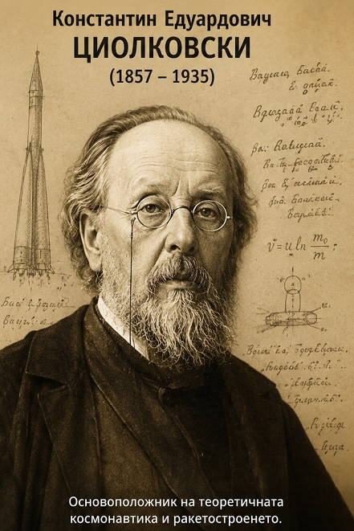
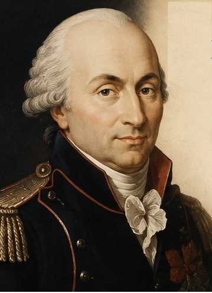
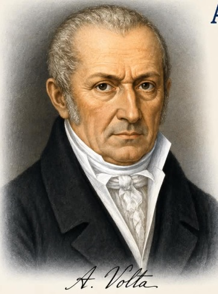
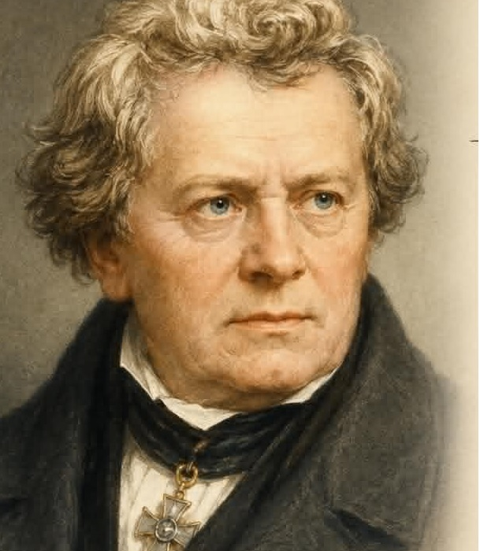
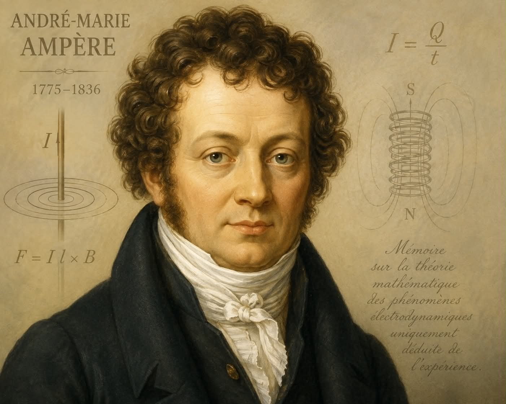
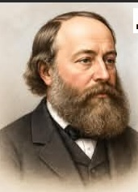
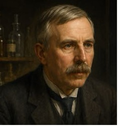
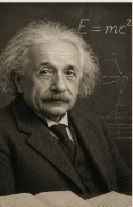

С какво се занимава историята на физиката?
Тази междинна наука изучава развитието на физиката още от древни времена. Като се проследяват биографиите на учените става ясно как в различните периоди от време се е развивала науката. Добре са познати идеите на древните хора, че Земята се крепи на кит, или по-късно, че е в центъра на света. Хиляди години се е смятало, че атомът е най-малката и практически неделима частица, изграждаща веществото. Историята на физиката разказва всички тези теории независимо от това, че те вече са отречени. Така се проследява развитието на науката физика.
Учените от древността


Още в древни времена хората са се вглеждали в красивото нощно небе и са виждали в струпаните звезди титани и различни животни. Интересен е факта, че от древността до наши дни (повече от две хилядолетия), разположението на звездите в съзвездията не е променено. Всички тези звезди, които изглеждат близо една до друга са звезди от различни галактики и са различно отдалечени от нас (като наблюдатели). Има звезди, от които излъчената светлина пътува хиляди години до нас. Колко дълъг период за човешката история са четири хилядолетия, а за нашето Слънце например този период е около 15 галактични минути.
Развитие на астрономията


През средновековието и Ренесанса се развиват основните теории за движението на планетите. Още древните хора, познавайки добре съзвездията забелязали, че има звезди, които си променят положението спрямо другите (т.нар. неподвижни звезди-основните звезди в съзвездията). Те нарекли тези звезди-блуждаещи звезди (планети). Наблюдавайки ги внимателно те забелязали, че блуждаещите звезди образуват "примки"(траекторията на тези звезди е крива линия наподобяваща примка). Това е било необяснимо дълго време и за първи път Коперник обяснява причините за тези "примки" като създава хелиоцентричната система.
Развитие на електричеството





За да стигне човечеството до идеята за електричния ток са били нужни хилядолетия, а за да направи крачката от първите лабораторни опити за произвеждане на ток до мощните електроцентрали са били необходими 100 години. За тока, без който днес животът ни е немислим, учените са започнали да работят още през 18-ти век. Техните опити и резултати днес може би изглеждат нищожни, но без тях развитието на този дял от науката и приложението му в техниката и бита биха били невъзможни.
Бурното развитие на науката и техниката през 19-ти и 20-ти век


"В цялостното развитие на човечеството 20-ти век е период, белязан от трагедии и зрелищен прогрес. Големите трагедии са двете световни войни, както и измислянето и създаването на атомната бомба, която донася на човешкия вид ужаса на самоунищожението. Зрелищното развитие, през 20-ти век е моментът, в който човек се доближава най-много до разкриването на голямата тайна: РАЗБИРАНЕТО НА ВСЕЛЕНАТА. Тези два аспекта в развитието на науката са свързани с гениалността на Алберт Айнщайн. Неговите проучвания допринасят за развитието на теорията на относителността, довела до дълбокото преразглеждане на наблюденията, които Нютон прави през 17-ти век, и в резултат - до научна революция. От друга страна, откритията и напредъкът във физиката правят възможно създаването на атомната бомба, но и космическите полети, и атомните централи, и лазерното лъчение и т.н."
Списание "100 личности - хората, променили света"